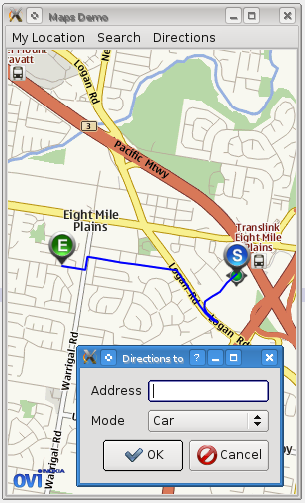

To complete our tour of the Maps API, we're going to add some very basic support for finding transport routes across a map. There is much more functionality available in the routing and navigation API than we are going to use, though some backend plugins may place restrictions on its use to develop, for example, voice-aided navigation applications (such as the Nokia Ovi maps plugin).

We are going to add support for a simple dialog that can be used to search for a destination point and display a line on the map giving the route from the current GPS "My Location" (which we implemented in part 3) to that destination.
First, we implement the dialog along similar lines to the SearchDialog we created earlier:
class NavigateDialog : public QDialog
{
Q_OBJECT
public:
NavigateDialog(QWidget *parent=0);
~NavigateDialog();
QString destinationAddress() const;
QGeoRouteRequest::TravelModes travelMode() const;
private:
QLineEdit *addressEdit;
QComboBox *modeCombo;
};
Once again we make use of a QFormLayout inside the dialog to align the widgets together. We have a QLineEdit for the address of the destination, and a QComboBox listing possible travel modes.
In MainWindow, we create a new slot for showing the navigate dialog:
void MainWindow::showNavigateDialog()
{
NavigateDialog nd;
if (nd.exec() == QDialog::Accepted) {
if (markerManager) {
// will fill this out later
}
}
}
And we hook it up to a Menu action:
MainWindow::MainWindow() :
...
{
...
QMenu *navigateMenu = new QMenu("Directions");
mbar->addMenu(navigateMenu);
navigateMenu->addAction("From here to address", this, SLOT(showNavigateDialog()));
....
}
Now we need a new class to manage routing. Finding a route to an address is a two-stage process: first, a geocode search is performed on the address to get a lat/lon coordinate. Then this coordinate is used in a route request which finally returns the desired route.
Our new class is called Navigator, and includes private slots to handle each of these events:
class Navigator : public QObject
{
Q_OBJECT
public:
Navigator(QGeoRoutingManager *routingManager, QGeoSearchManager *searchManager,
MapsWidget *mapsWidget, const QString &address,
const QGeoRouteRequest &requestTemplate);
~Navigator();
void start();
QGeoRoute route() const;
signals:
void finished();
void searchError(QGeoSearchReply::Error error, QString errorString);
void routingError(QGeoRouteReply::Error error, QString errorString);
private slots:
void on_addressSearchFinished();
void on_routingFinished();
private:
QString address;
QGeoRouteRequest request;
QGeoRoutingManager *routingManager;
QGeoSearchManager *searchManager;
MapsWidget *mapsWidget;
QGeoSearchReply *addressReply;
QGeoRouteReply *routeReply;
QGeoMapRouteObject *routeObject;
Marker *endMarker;
Marker *startMarker;
QGeoRoute firstRoute;
};
The intended lifecycle of a Navigator is to be created when the dialog is accepted, then start() is called to begin the requests. The requests will either error out or complete, emitting one of finished(), searchError(), or routingError() signals. If the request is successful, the Navigator creates the appropriate markers and draws the route on the map (using a QGeoMapRouteObject). It then owns these map objects and will remove them when deleted.
Now for the Navigator's implementation: first, the start() method, which begins the process by launching the search request.
A QGeoRouteRequest is specified first and foremost by the points the route must pass through (the waypoints). In our case we only wish two have two waypoints, the user's starting location, and the destination. We add the first of these in start() and the second after the search request returns.
void Navigator::start()
{
QList<QGeoCoordinate> waypoints = request.waypoints();
waypoints.append(mapsWidget->markerManager()->myLocation());
request.setWaypoints(waypoints);
startMarker = new Marker(Marker::StartMarker);
startMarker->setCoordinate(mapsWidget->markerManager()->myLocation());
startMarker->setName("Start point");
mapsWidget->map()->addMapObject(startMarker);
addressReply = searchManager->search(address);
if (addressReply->isFinished()) {
on_addressSearchFinished();
} else {
connect(addressReply, SIGNAL(error(QGeoSearchReply::Error,QString)),
this, SIGNAL(searchError(QGeoSearchReply::Error,QString)));
connect(addressReply, SIGNAL(finished()),
this, SLOT(on_addressSearchFinished()));
}
}
After the request finishes, the on_addressSearchFinished() slot will be invoked, which finishes off the routing request and sends it in a similar fashion:
void Navigator::on_addressSearchFinished()
{
if (addressReply->places().size() <= 0) {
addressReply->deleteLater();
return;
}
QGeoPlace place = addressReply->places().at(0);
QList<QGeoCoordinate> waypoints = request.waypoints();
waypoints.append(place.coordinate());
request.setWaypoints(waypoints);
routeReply = routingManager->calculateRoute(request);
if (routeReply->isFinished()) {
on_routingFinished();
} else {
connect(routeReply, SIGNAL(error(QGeoRouteReply::Error,QString)),
this, SIGNAL(routingError(QGeoRouteReply::Error,QString)));
connect(routeReply, SIGNAL(finished()),
this, SLOT(on_routingFinished()));
}
endMarker = new Marker(Marker::EndMarker);
endMarker->setCoordinate(place.coordinate());
endMarker->setAddress(place.address());
endMarker->setName("Destination");
mapsWidget->map()->addMapObject(endMarker);
addressReply->deleteLater();
}
And then finally, when the routing request returns we can create the route object on the map and emit finished():
void Navigator::on_routingFinished()
{
if (routeReply->routes().size() <= 0) {
emit routingError(QGeoRouteReply::NoError, "No valid routes returned");
routeReply->deleteLater();
return;
}
QGeoRoute route = routeReply->routes().at(0);
firstRoute = route;
routeObject = new QGeoMapRouteObject;
routeObject->setRoute(route);
routeObject->setPen(QPen(Qt::blue, 2.0));
mapsWidget->map()->addMapObject(routeObject);
emit finished();
routeReply->deleteLater();
}
Now in MainWindow we have to create a new Navigator instance after the dialog returns. We store the Navigator instance in a member variable so that we can delete the last one in order to remove its map objects before the new one is constructed:
class MainWindow : public QMainWindow
{
private:
Navigator *lastNavigator;
...
};
void MainWindow::showNavigateDialog()
{
NavigateDialog nd;
if (nd.exec() == QDialog::Accepted) {
if (markerManager) {
QGeoRouteRequest req;
req.setTravelModes(nd.travelMode());
if (lastNavigator)
lastNavigator->deleteLater();
Navigator *nvg = new Navigator(serviceProvider->routingManager(),
serviceProvider->searchManager(),
mapsWidget, nd.destinationAddress(),
req);
lastNavigator = nvg;
connect(nvg, SIGNAL(searchError(QGeoSearchReply::Error,QString)),
this, SLOT(showErrorMessage(QGeoSearchReply::Error,QString)));
connect(nvg, SIGNAL(routingError(QGeoRouteReply::Error,QString)),
this, SLOT(showErrorMessage(QGeoRouteReply::Error,QString)));
mapsWidget->statusBar()->setText("Routing...");
mapsWidget->statusBar()->show();
nvg->start();
connect(nvg, SIGNAL(finished()),
mapsWidget->statusBar(), SLOT(hide()));
}
}
}
And now we have basic support for calculating and displaying routes on the map. In addition to this, we could quite easily use the QGeoRoute object to show a list of directions and overall statistics about the journey. For more information see the documentation about QGeoRoute.
In the final part of this tutorial, we will optimise the maps demo so far for mobile platforms in order to deploy it to a phone.